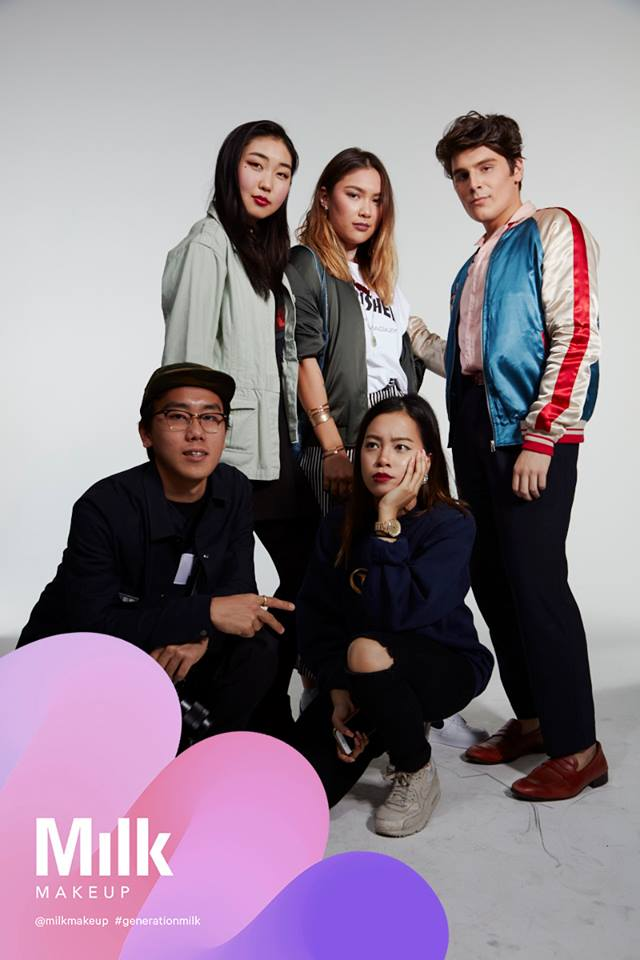
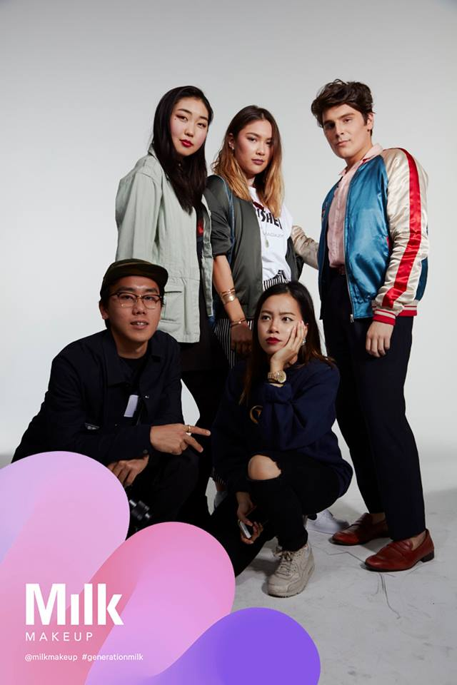

Kyle Tranquilli is a New York based designer. He currently holds an internship as a Visual Merchandiser for Jimmy Choo. Prior to working at Jimmy Choo, he's interned at NYLON Magazine, The Investment Center, and Karla Otto. In his free time he enjoys painting, creating illustrations, and meeting new people.